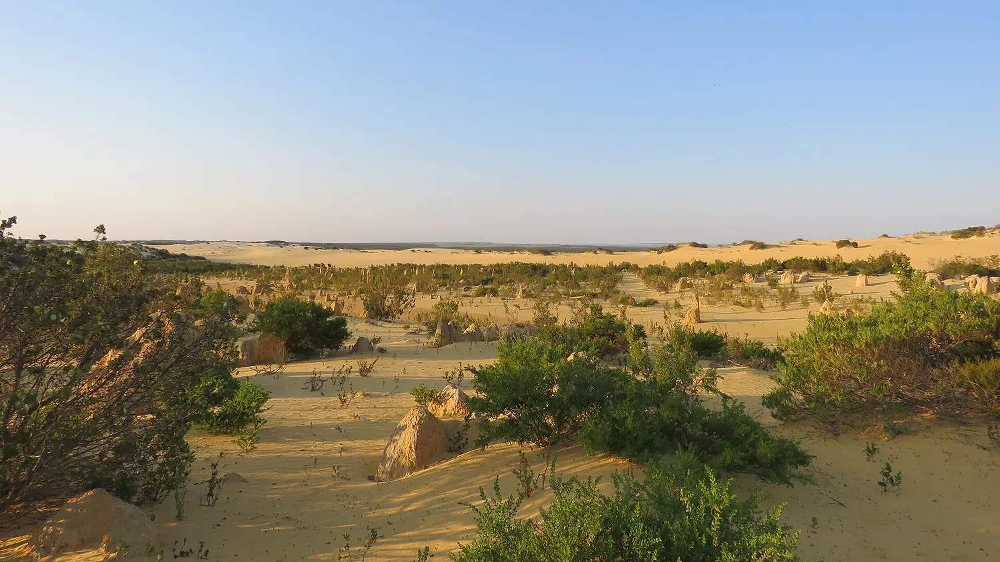
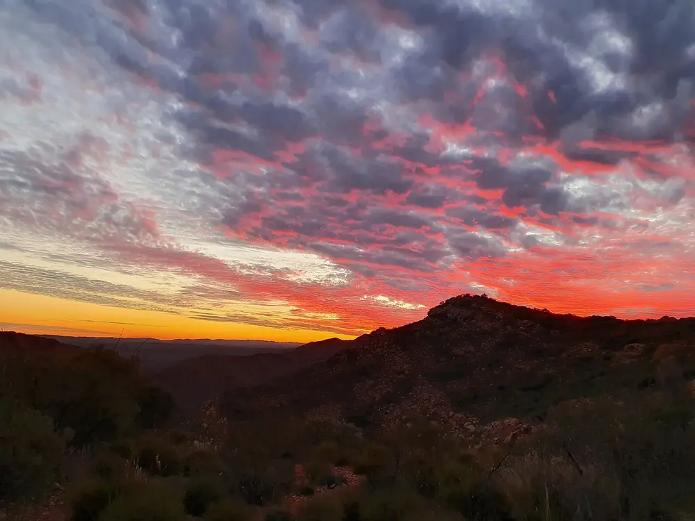
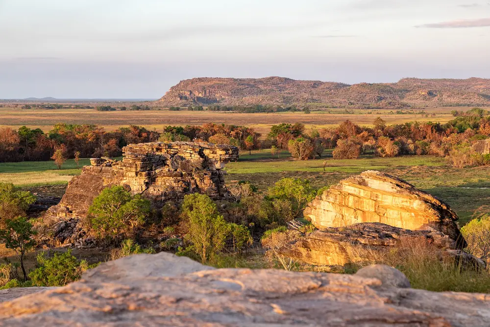
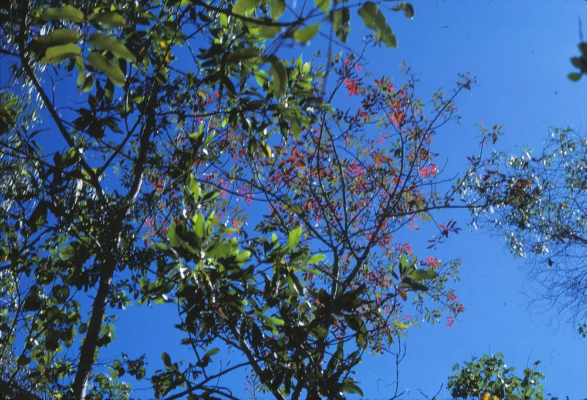
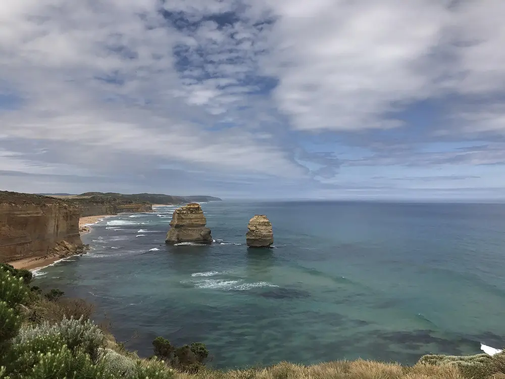

Four routes
across.
You cannot see this continent in one trip, so stop trying. Each of these does one region properly — day by day, with the real distances, the drives that are longer than they look, and the nights that are worth rearranging everything else around.
Nambung National Park · Calistemon · CC BY-SA 4.0

Kattastroffee1976 · CC BY-SA 4.0
The Red Line
10 days · Northern TerritoryAlice Springs out to Uluru the long way, through the West MacDonnells rather than straight down the Stuart Highway. Roughly 1,100 kilometres of driving, all of it sealed if you skip the Mereenie Loop.
- Season
- May–Sep
- Driving
- ~1,100 km
- Vehicle
- 2WD is enough
-
Day 1
Alice Springs · Mparntwe
Land, collect the car, and do nothing ambitious. The Desert Park in the late afternoon is the single most useful two hours of the trip — it teaches you what you are about to be looking at.
-
Days 2–4
West MacDonnell Ranges
Simpsons Gap, Standley Chasm at midday when the light drops in, Ellery Creek Big Hole, and Ormiston Gorge as a base. Walk sections of the Larapinta rather than driving between car parks — Ormiston Pound Walk is 7.5 km and among the best day-walks in the country.
Alice → Ormiston · 135 km · 1 hr 40 -
Day 5
Watarrka · Kings Canyon
The sealed route back through Alice and down the Luritja Road is 480 km and takes most of the day. The Mereenie Loop cuts it to 300 km but is unsealed, needs a permit and a high-clearance vehicle, and is worth it if you have one.
480 km sealed · 5 hrs 30 -
Day 6
Kings Canyon Rim Walk
Six kilometres, starting with a steep climb people call Heart Attack Hill and then almost level around the rim, past the Garden of Eden. Start at first light: the gate closes to new walkers at 9 am when it is forecast above 36 °C.
-
Day 7
Yulara · Uluru–Kata Tjuta
An easy drive with the rock appearing well before you believe it should. Mount Conner, 100 km east, fools almost everyone first — locals call it Fooluru.
306 km · 3 hrs 15 -
Day 8
The base walk, then Kata Tjuta
10.6 km around Uluru starting at dawn, the Cultural Centre through the middle of the day when it is too hot to be outside, then Walpa Gorge at Kata Tjuta for last light.
-
Day 9
Valley of the Winds
7.4 km through the domes, and a completely different landscape from Uluru despite being visible from it. Then stay outside after dark — this is the darkest sky most visitors will ever stand under.
-
Day 10
Fly out from Yulara
Direct flights run to Sydney, Melbourne, Brisbane, Cairns, Adelaide and Alice Springs, which saves the drive back.

Dietmar Rabich · CC BY-SA 4.0
Wet to Dry
8 days · Top EndDarwin, Litchfield, Kakadu and Nitmiluk in a loop. Do it in the late Dry and the wildlife is concentrated; do it in April and the waterfalls are running but half the tracks are shut. Both are good trips — they are not the same trip.
- Season
- May–Sep
- Driving
- ~1,000 km
- Vehicle
- 4WD for Jim Jim
-
Day 1
Darwin · Larrakia country
Closer to Jakarta than to Canberra, and it feels it. Mindil Beach sunset market runs Thursday and Sunday in the Dry; the Museum and Art Gallery's Cyclone Tracy room takes fifteen minutes and stays with you.
-
Day 2
Litchfield National Park
Florence, Wangi and Buley Rockhole — plunge pools that are, unusually for the Top End, safe to swim in when Parks says so. Check the signs each morning; crocodile surveys change the answer.
Darwin → Litchfield · 120 km · 1 hr 30 -
Day 3
Ubirr, at sunset
Drive into Kakadu and go straight to Ubirr for late afternoon. Climb to the Nadab lookout for the last hour of light over the floodplain — it is the view that persuaded a generation of Australians their country had a north.
Darwin → Jabiru · 253 km · 3 hrs -
Day 4
Burrungkuy · Nourlangie
The Anbangbang gallery, repainted as recently as the 1960s by Nayombolmi, and the shelter beneath it that has been used for twenty thousand years. Take the ranger talk if the timing works; take a Bininj-guided tour if you can get one.
-
Day 5
Yellow Water & Jim Jim
Dawn cruise on the billabong, then the 4WD track in to Jim Jim Falls — 60 km of it, with a creek crossing, opening around June. By late Dry the falls may be a trickle; the plunge pool below is the point either way.
-
Day 6
Nitmiluk · Katherine Gorge
Thirteen gorges cut through sandstone, run by the Jawoyn who had it returned to them in 1989. Take a canoe rather than the cruise boat if the water level allows.
Kakadu → Katherine · 300 km · 3 hrs 30 -
Day 7
Leliyn · Edith Falls
A tiered set of pools an hour north of Katherine, and the best swim on this route. The upper pool is a 2.6 km loop climb and usually empty.
-
Day 8
Back to Darwin
Three and a half hours up the Stuart Highway. If you have an extra day, spend it at Katherine's Top Didj or Nitmiluk's cultural programmes rather than adding a fourth national park.
320 km · 3 hrs 30

John Robert McPherson · CC BY-SA 4.0
Reef & Rainforest
9 days · QueenslandThe only place on Earth where two World Heritage areas meet at the shoreline, followed by three days sailing the Whitsundays. Short drives, one internal flight, and more time in the water than out of it.
- Season
- Jun–Oct
- Driving
- ~400 km
- Note
- Stingers Nov–May
-
Day 1
Cairns · Yirrganydji & Yidinji country
A launch pad rather than a destination. Swim in the lagoon on the Esplanade — the sea here is mud flats and, in summer, stingers.
-
Day 2
Cape Tribulation
North past Mossman, across the Daintree River on the cable ferry, and into forest that closes over the road. This is the stretch where rainforest actually meets reef.
140 km · 2 hrs 30 with the ferry -
Day 3
Daintree, guided
Mossman Gorge with a Kuku Yalanji guide. Around 180 million years of continuous forest, and the difference between "very green" and understanding what you are standing in is entirely the guide.
-
Day 4
Agincourt Ribbon Reefs
Out from Port Douglas to the outer reef, which is in far better condition than the inshore fringing reefs. Take the introductory dive even if you have never dived; the difference from snorkelling is not small.
-
Day 5
Atherton Tablelands
Inland and a thousand metres up: crater lakes, waterfalls, and the strangler fig at Curtain Fig. A cool day between two hot ones.
Loop from Cairns · 180 km -
Day 6
Fly to the Whitsundays
Cairns to Hamilton Island or Proserpine, about ninety minutes. Provision, board, and sleep on the boat.
-
Days 7–8
Under sail · Ngaro sea country
Seventy-four islands. Anchor overnight at Whitehaven and walk up to Hill Inlet at low tide before the day boats arrive from Airlie. Snorkel Blue Pearl Bay off Hayman; the fringing coral there is close in and healthy.
-
Day 9
Disembark and fly out
Hamilton Island runs direct services to Sydney, Melbourne and Brisbane, so there is no need to route back through Cairns.

Punya · CC BY-SA 4.0
The Southern Edge
12 days · Victoria & South AustraliaMelbourne to the Flinders Ranges by way of the Great Ocean Road, Gariwerd and the Barossa. The one route here that works best in the Australian summer, when the north is unusable.
- Season
- Nov–Apr
- Driving
- ~2,000 km
- Vehicle
- 2WD throughout
-
Day 1
Melbourne · Wurundjeri country
Give it a full day and spend it on foot in the laneways, at the NGV, and in Fitzroy. Then leave — the road is the trip.
-
Day 2
Lorne
The Great Ocean Road proper begins at Torquay. Drive it westward so the ocean and every lookout are on your side of the road. Erskine Falls is a short detour inland.
140 km · 3 hrs with stops -
Day 3
Port Campbell
Through the Otways and out onto the limestone coast. The Twelve Apostles at sunset is crowded; Loch Ard Gorge and the Bay of Islands at sunrise are not. Eight stacks still stand, and there were never twelve.
140 km · 2 hrs 30 -
Days 4–5
Gariwerd · Grampians
Sandstone ranges holding roughly eighty per cent of Victoria's rock art. Walk the Pinnacle from Wonderland car park, and see Gulgurn Manja or Bunjil's Shelter with a Jardwadjali or Djab Wurrung guide.
190 km · 2 hrs 30 -
Day 6
Adelaide · Kaurna country
A long, flat drive through wheat country. Adelaide is the most walkable of the capitals and the Central Market is worth arriving hungry for.
450 km · 5 hrs -
Day 7
Barossa Valley
Ungrafted Shiraz on 1840s rootstock, because phylloxera never crossed into South Australia. Book two cellar doors, not six, and eat at one of them.
70 km · 1 hr -
Days 8–9
Ikara · Wilpena Pound
An eighty-square-kilometre amphitheatre of upturned rock that Adnyamathanha law reads as two akurra, serpents, lying where they came to rest. Walk in from Wilpena to Wangara lookout, and take the dawn scenic flight if the budget allows — the shape only resolves from above.
400 km · 4 hrs 30 -
Day 10
Back to the coast
South through Quorn and the Clare Valley if you want one more cellar door, otherwise straight through to Cape Jervis.
430 km · 5 hrs -
Days 11–12
Kangaroo Island
Forty-five minutes on the ferry from Cape Jervis. Remarkable Rocks, Admirals Arch, and country still visibly regenerating from the 2019–20 fires. Fly out of Adelaide the following evening.
Ferry · 45 min
Or take
six weeks.
If you genuinely have the time, the honest answer is to stop connecting capital cities and follow the weather north as the southern summer ends.